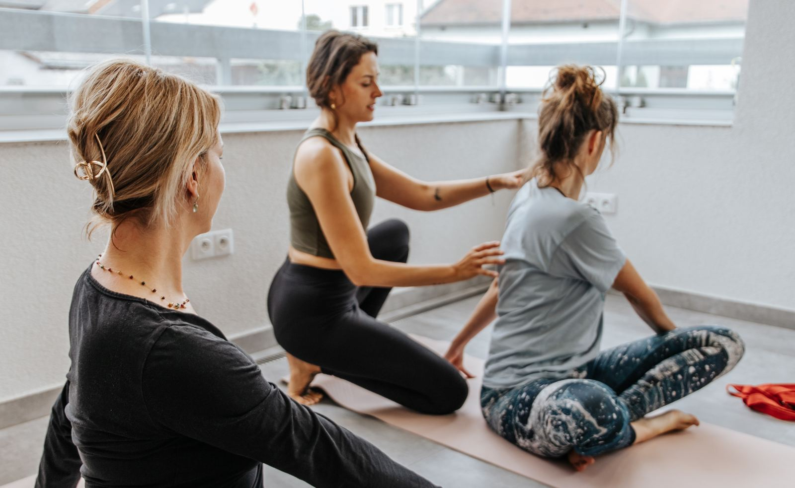

Proč to funguje
Úleva od bolesti zad a hlavy
Jógová terapie cílí na příčiny obtíží: zkrácené svaly, přetížené fascie a kompenzační vzorce při dlouhém sezení u počítače.
Lepší postura
Systematická práce s tělem mění způsob, jak lidé sedí, stojí a dýchají, i mimo lekci.
Méně stresu
Dechové techniky z pránájámy, které využívají i profesionální freediveři, dokáží během minut zklidnit nervovou soustavu a obnovit soustředění.
Silnější tým
Sdílená praxe stmeluje. Lekce jsou prostor, kde se lidé potkají jinak než u monitoru.
Balíčky
- Nezávazná úvodní lekce pro váš týmzdarma
- Měsíční spolupráce · 4 × 50 min, skupina do 15 osob12 000 Kč / měs.
- Půlroční spolupráce · 4 × 50 min měsíčně, celkem 48 000 Kč, ušetříte 24 000 Kč8 000 Kč / měs.
Ceny jsou bez DPH. Doprava v rámci Přerova a Olomouce zdarma. Lekce probíhají před pracovní dobou nebo po ní, bez zásahu do chodu firmy. Workshop Flow State Reset nabízím i pro týmy.
Co říkají firmy
Lenka u nás v IN-HUB Přerov vede jógu pro naše členy a je vážně skvělá. Pro lidi je to ideální způsob, jak na chvíli vypnout od práce, protáhnout se a přijít během hektického dne na jiné myšlenky. Cením si toho, jak je flexibilní a časově nám vždycky vyjde vstříc. Pokud hledáte pro svou firmu někoho spolehlivého, s kým je radost spolupracovat a kdo lidem opravdu pomůže si odpočinout, Lenku stoprocentně doporučuji.
Firemní lekce jógy s Lenkou navštěvovali zaměstnanci napříč společností, od administrativních pozic až po pracovníky ve výrobě. Pravidelný pohyb, vědomá práce s dechem a cílené uvolnění pomáhaly kompenzovat jednostranné zatížení, snižovat stres a podporovat celkovou pohodu zaměstnanců. Velmi oceňujeme profesionální vedení, individuální přístup a schopnost přizpůsobit lekce různým potřebám účastníků.
Chcete to vyzkoušet?
Začněte nezávaznou úvodní lekcí.